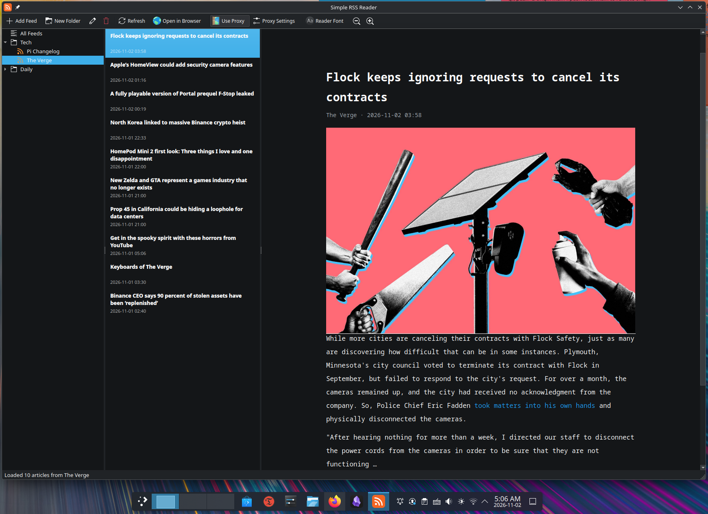

A Very Simple RSS Reader for Linux
Hello, Linux community! Introducing my simple RSS reader — built with proxy flexibility in mind.
Hello, people!
After moving to China, I started running into quite a few limitations when using Linux applications, largely due to the Great Firewall (GFW). It made me rethink how I handle network connections on my Linux desktop.
I'm not particularly fond of using TUN mode or system-wide proxy settings on Linux. In my experience, they can sometimes be glitchy, and I don't like the idea of routing all my system traffic through a proxy when only certain applications actually need one.
What I really wanted was something much simpler: the ability to configure a proxy directly within an application, so that only the traffic from that particular app goes through the proxy, leaving everything else on my system untouched.
That became the primary motivation behind this little project.
I started developing a simple RSS reader, with one main goal in mind: making proxy configuration as easy and straightforward as possible. No need to mess around with system-wide network settings or rely on TUN mode just to get an individual application working.
Along the way, I realized that I also wanted more control over the reading experience. So I added support for custom fonts and font sizes, allowing users to personalize the interface and make reading more comfortable.
And here we are! The first stable version, Simple RSS Reader v1.0, is finally ready.

I've been using and testing it for quite some time, and so far, I haven't run into any new bugs. Of course, there's always room for improvement, and I have plenty of ideas for additional features down the road.
This is a relatively small project, but I built it to solve a problem I personally encountered, and I hope it might be useful to someone else facing similar frustrations.
I'm happy to share it with the Linux community!
If you're interested, give it a try. Feedback, suggestions, and bug reports are always welcome. They will help me make this little application better.
Thanks for checking it out, and happy reading!